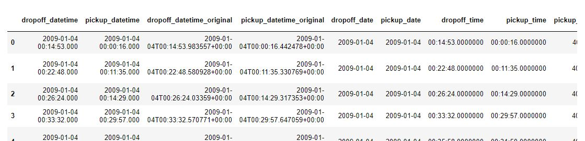
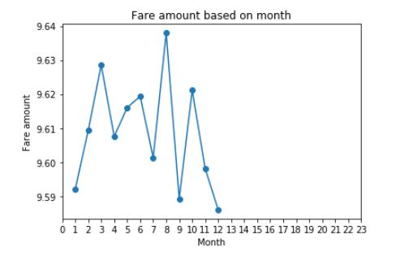
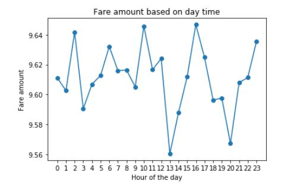
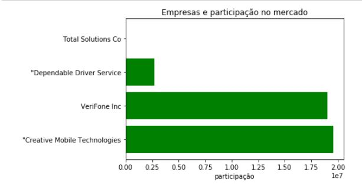
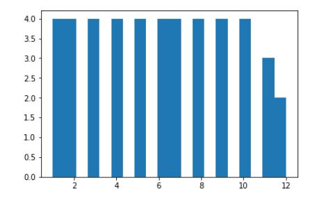
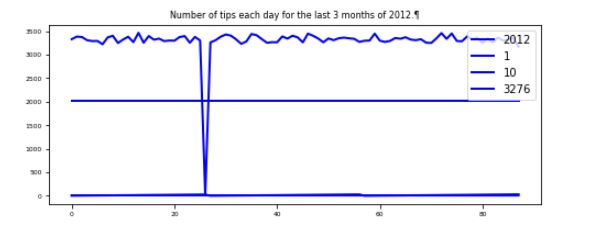
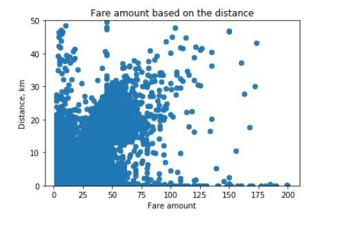
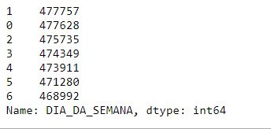
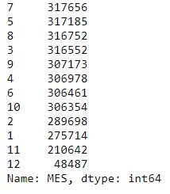

Esta análise inicia com um ETL que faz a ingestão dos Json para o Sql Server e realiza transformações e análises no banco de dados.
Em seguida, foram utilizados os datasets gerados no Sql Server para produzir mais análises e visualizações no python, que são objeto deste documento.
A primeira atividade é a inspeção dos dados. Esta inspeção busca por integridade e por informações relevantes que podem ser inferidas a partir do que foi fornecido.
Abaixo temos um pequeno recorte dos nossos dados.
A primeira pergunta que os dados respondem diz respeito à distância média das corridas com até dois passageiros.
Para produzir esta informação foi gerado um dataset direto no sql que já filtrava todas as corridas com até dois passageiros. O cálculo da média foi feito no sql e também no python para mostrar que pode ser feito das duas forma Uma informação relevante sobre o dataset é que temos 3.319.652 de corridas com até 2 passageiros, ou seja, a maioria, já que ao todo são 4.000.000 de corridas.
A distância média percorrida nestas corridas é de 2.66 km. Conforme verificamos, a distância média obtida no python é a mesma obtida pelo sql. Fiz nos dois para mostrar que podemos escolher qualquer das abordagens. Em média, nas corridas com até dois passageiros, temos 2,6 km rodados.
O gráfico abaixo exibe o valor médio das corridas por mês. Embora o gráfico apresente oscilações, notamos que a faixa de valores oscila em torno de 9,6 dólares.

Foi gerado também um gráfico com as tarifas médias em relação à hora do dia.

Podemos notar que às 13 e às 20:00 horas são os horários com menores valores.
Comparando por empresa, nota-se que há três companhias que concentram quase todas as viagens:

Como podemos verificar no gráfico , a empresa Creative Mobile Technologies possui maior valor em corridas, seguida de perto pela Verifone Inc e bem atrás pela Dependable Driver Service. A empresa Total Solutions Co nem aparece no gráfico por apresentar um valor quase insignificante.

O histograma mostra que os meses 11 e 12 são os que apresentam menor número de viagens

Esta série temporal apresenta os meses 8,9 e 10 de 2012, que são os três últimos meses catalogados no dataset . Note que, no dia 28/10 ocorreram pouquíssimas gorjetas, o que significam poucas corridas , só ocorreram 15 gorjetas neste dia. Este foi o dia em que o furacão Sandy passou pela costa leste, logo este dia é um outlier que pode enviesar nossas análises
Valor total (incluindo pedágios), dados locais de embarque e desembarque.

Este gráfico mostra a distância em Km em relação aos valores das viagens. A distância foi calculada com base nas latitudes e longitudes de origem e de destino. É interessante notar que a função haversine_distance faz uma linha entre origem e destino, levando em consideração a curvatura do planeta. Nosso gráfico mostra que a maior parte das viagens são as de menor quilometragem e apresentam valores mais baixos. Esta análise é muito importante para a escolha do tipo de veículo e também para escolher a abordagem a ser utilizada nas campanhas para vender os serviços da empresa.
tempo médio de viagem aos sábados: 00:08:39
tempo médio de viagem aos domingos: 08:39
latitude origem aos sábados: 40.11586
latitude origem aos domingos: 40.124
longitude origem aos sábados: -72.813
longitude origem aos domingos: -72.8294
latitude destino aos sábados: 40.126
latitude destino aos domingos: 40.135
longitude destino aos sábados: -72.832
longitude destino aos domingos: -72.849
É interessante notar que sábados e domingos apresentam o mesmo tempo médio de viagem, aproximadamente 8 minutos e 39 segundos. Fiz também uma análise das latitudes e longitudes médias aos sábados e domingos, resultando em valores bem semelhantes. Esta média indica os centróides da região onde as corridas acontecem. Esta informação pode ser utilizada para se criar uma estratégia logística, posicionando os veículos próximos a pontos com maior volume de embarques.

Notamos que o dia da semana que tem mais corridas é a segunda-feira, seguida pelo domingo.
Sábado é o dia com menor número de corridas.
Como já havia sido identificado no histograma, o melhor mês é julho, já novembro e dezembro são os piores.
Este foi um exercício livre de análise, feito nas horas vagas. Mesmo assim foi possível descobrir várias inferências interessantes. Caso este trabalho seja refinado e automatizado, é possível gerar muitas conclusões com potencial de transformar a gestão destas empresas positivamente.
Este trabalho, como todo trabalho de ciência de dados, é voltado a resultados. O valor da ciência de dados está na melhoria do negócio da empresa